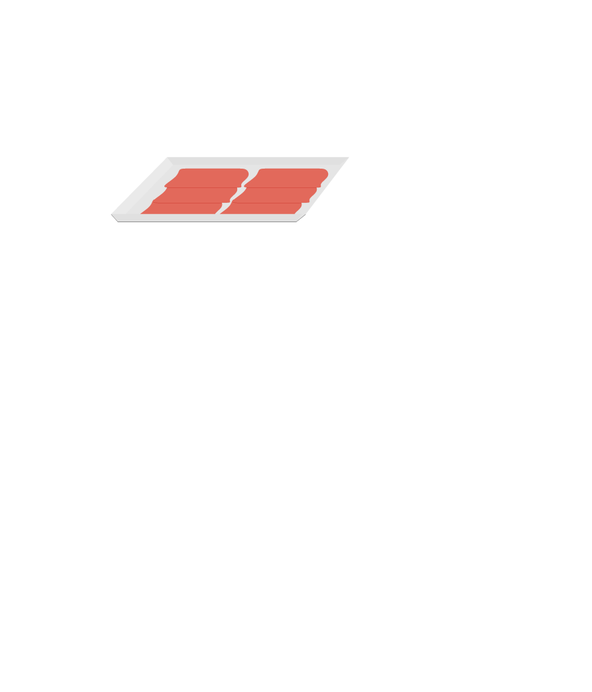
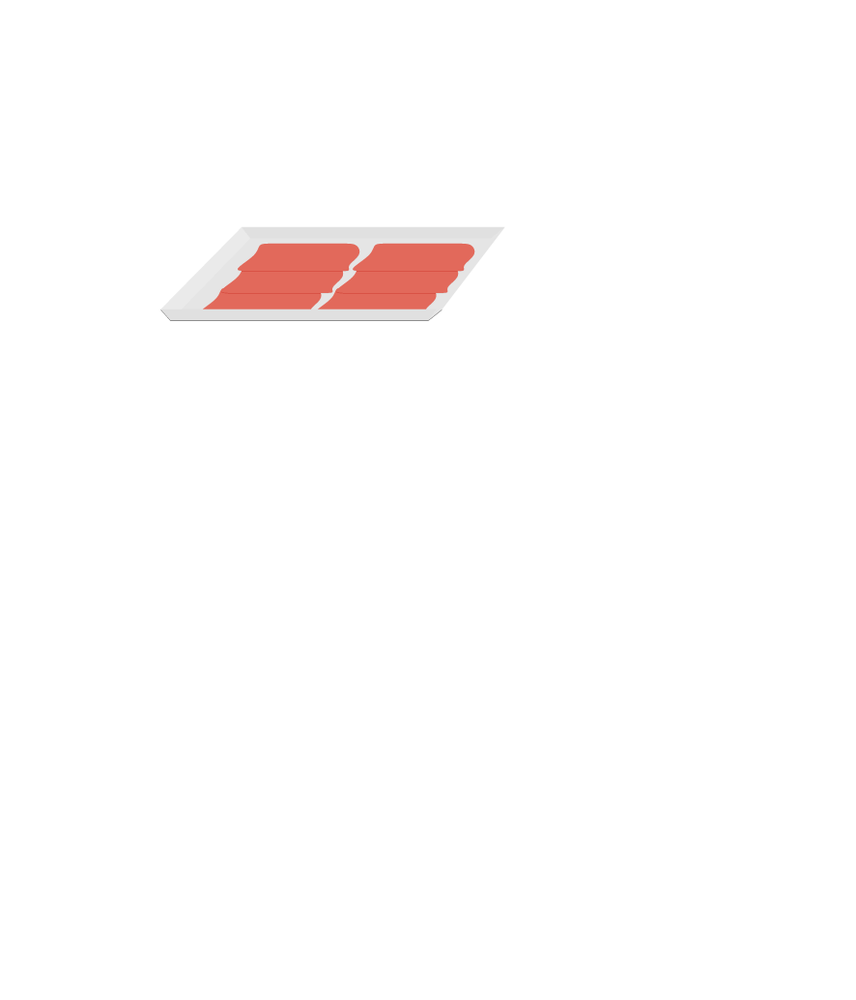
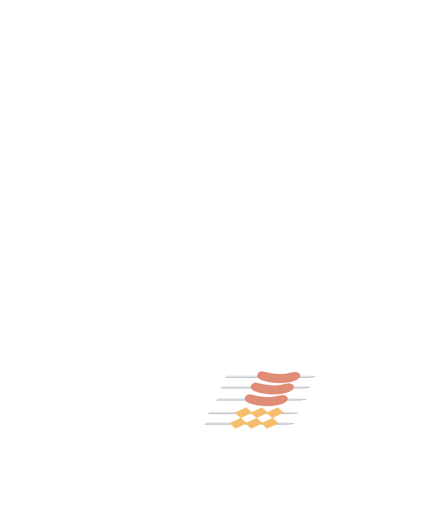
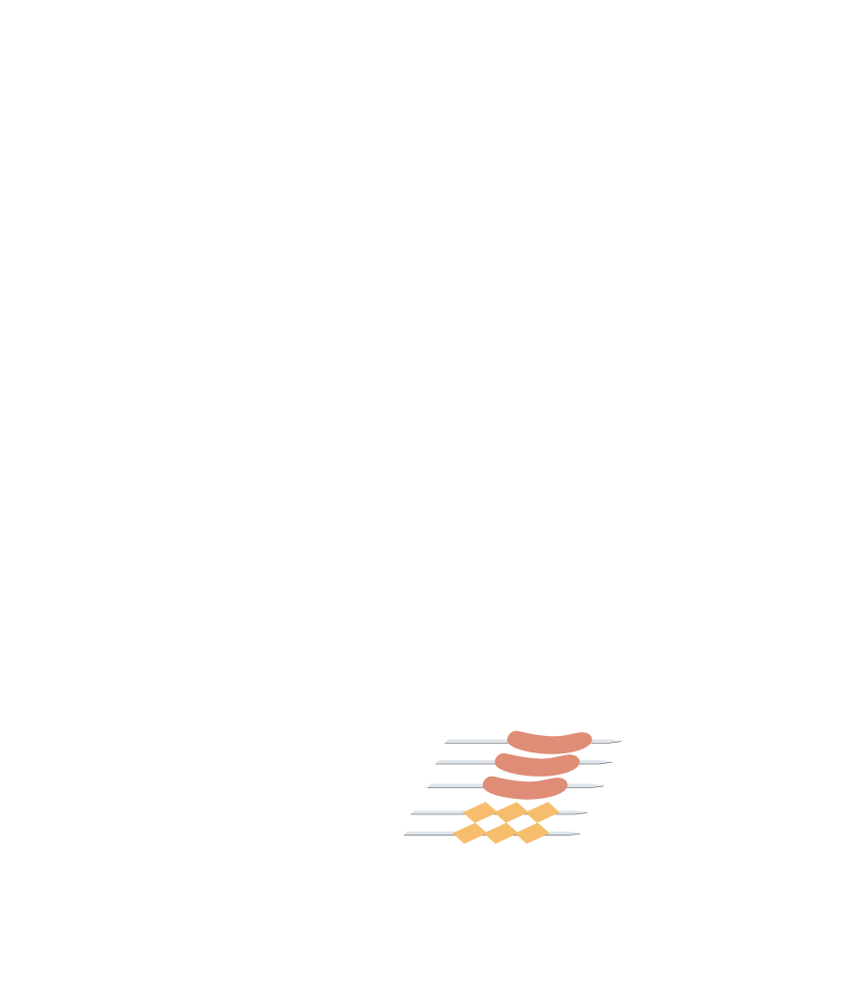

烤肉？專業喔！
邊烤邊看不出錯，美味烤肉指南


 



 



烤肉準備一起來
爐＆網
容量大的烤肉爐火力強烤得快，但相對的碳也會使用得較快。烤網的選擇，材質建議使用不銹鋼，形狀尺寸符合大眾規格最為合適，買烤肉爐附的烤網如果間距過大，食物會掉下去。
竹籤
免洗竹籤易燃及燒焦，有漂白水殘留疑慮。推薦使用不鏽鋼籤，可以幫助導熱，扁平形狀的籤子就可以讓食物不在上面轉動，好清洗而且可以重複使用。
烤肉醬
保鮮袋
肉排裝在保鮮袋中，以酒瓶輕輕捶打可讓肉排快速鬆軟，肉汁也不會飛濺。或是將調味料倒進保鮮袋與食材一起醃製，省空間又好拿取。
碳

2.環保無煙炭：以椰子纖維與天然黏著劑壓製而成，中空易燃，無煙較為環保。
3.炭精：煙少溫度高，較少柴火香，但也讓衣服不殘留味道，日式燒肉店愛用。
4.備長炭：價格高，炭香濃郁，無煙耐燒，使用噴槍較容易點燃，是高級燒烤店首選。
鋁箔紙/盒
鋁箔紙包覆食材，可以達到蒸烤的效果，用簡單的烤箱也能搞定。也可以作為各種容器的蓋子，導熱佳方便又衛生，烘烤時也能幫助食物不烤焦！
鋁箔盒有方有圓，可以讓蛤蜊、金針菇等食材湯汁不流失，較能品嚐到原汁原味。建議使用時能加少許水烹調，米酒或高湯都行，避免乾燒狀況。
保鮮膜
保鮮膜可以用來把肉類做簡單的分隔，就算疊起來冷凍，也不怕變成一塊大肉磚。或是味道重的食材，在進冰箱前先用保鮮膜封起來，再放到冷凍袋裡，就可以有效隔絕氣味了。
具有高蛋白質的豆乾在室溫高於20度C就會開始腐壞，為了防止腐壞多數豆乾產品會添加防腐劑，甚至在製程中使用消泡劑及凝固劑等，因此在傳統市場攤販未冷藏甚至暴露於高溫環境中的散裝品，除了擔心腐敗的問題之外，也應留心是否有防腐劑過量。
建議清洗方式：
有外皮的蔬菜：先在流動清水下，以軟質清潔用品反覆沖洗2～3次，接著在動手將外皮去除，可以有效將蔬果表面殘留的農藥去除，先清洗是為了避免農藥污染到內層菜葉或果肉。
沒有外皮的蔬菜：直接用流動清水沖洗，將看得到的髒污或泥土等去除，若有根部或蒂頭的蔬菜可先部分切除，葉片都分開後在流動清水下輕輕搓洗每個葉片，大約需要清洗2～3次。
最後記得將蔬菜瓜果放在清水浸泡10~15分鐘，這個步驟可以一次浸泡所有準備使用的蔬果，浸泡差不多時間就將水倒掉後，再沖洗兩三次瀝乾之後，烤肉前的蔬菜處理就完成了。
2. 使用蔬果清潔劑必須挑選合格廠牌，且清洗上要更仔細，才不會反而有清潔劑殘留的問題。

把肥肉全部去掉再料理？不！請先留著肥肉下去烤，等到肉入味之後，再把肥肉去除吧！肉本身的味道不論是豬肉或雞肉，大致上沒有什麼不同。決定肉的味道重點就在於肥肉。所以如果把全部的肥肉都去掉才料理的話，肉本身的風味就會不見了。
肉才剛從冰箱拿出來就馬上拿去烤？要烤肉之前，記得先放在常溫下解冰，因為從冰箱拿出來就馬上烤的話，肉要烤熟需要一段時間，肉的美味在這時就會流失掉了。
鹽味整個滲透入肉裡之後才拿去烤？不！等到要烤之前再來調味。肉從冰箱拿到常溫放時，如果先加鹽或胡椒調味，會使肉裡的水分流失，美味度也大幅降低，是不太好的作法。
示範一：蛤蜊薑絲冬瓜
蛤蜊洗淨後泡入清水中約半小時，等蛤蜊吐沙。
冬瓜洗淨後去皮，切成小塊狀。
取出鋁箔盒，放入吐完沙的蛤蜊、冬瓜和薑絲，可放入少許米酒調味，再蓋上鋁箔紙即可。
示範二：蒜頭胡椒蝦
蝦子洗淨後，用剪刀把觸鬚先剪掉。
取出鋁箔盒， 蝦子先撒粗顆粒的黑胡椒，再放入蒜片，也能放入少許米酒調味，再蓋上鋁箔紙即可。
豬血來源是否衛生會直接影響食用安全，曾發生有不肖廠商以飼料用雞血製作豬血糕的食安事件，且豬血或雞血取血不當容易混入雜物造成血液含水分會容易腐敗，因此也可能會有添加過量防腐劑等問題。
外觀：若顏色過白可能利用亞硫酸鹽或過氧化氫進行漂白。
口感：非常有彈性或是有脆度，可能加入了食品添加物磷酸鹽或修飾澱粉調整口感。
挑選需注意
1.食材無標示，無法辨別加工製品的來源，請多留意品質。
2.醃漬醬料難以直接辨識肉品的新鮮與否，且食用過多易造成身體負擔。
3.販賣場所保鮮溫度容易不夠低溫，易滋生微生物，請完全煮熟再食用。
醃肉教學一：牛小排
高單價的牛排類無需醃，只需在表面撒上海鹽或胡椒，牛肉風味才能被凸顯，羊排也適用此方法，撒上迷迭香或羅勒，再放入夾鏈袋內保存，建議烤肉當天或前一天購買，新鮮度才不流失。
海鹽建議直接用手抓出適量撒上，之後再撒上胡椒鹽，稍微拍打一下即可裝入夾鏈袋。
醃肉教學二：肉片類
雞、羊、豬或是牛肉片都適合這樣醃，不過建議醃漬肉片時最好能在其他塑膠袋或碗中進行，調味完成後再轉放入夾鏈袋中冷藏備用。
豬肉片雙面抹上烤肉醬，放入蒜片，稍微攪拌，若不用烤肉醬，醬油，糖，米酒，香油，蒜頭，蔥，洋蔥，看醃製的時間加水調節鹹度
放入夾鏈袋內，並加以搓揉，使其更快速入味，再放入冰箱保存，如果是隔天就烤，可以放冷藏；超過兩天才會食用，需放冷凍庫，約可保存一週。
肝臟類的食材切成小塊，把油脂部分去除後，用海水程度的食鹽水浸泡 30 分鐘，再用流水洗 2~3 次，這樣幾乎可以同時將腥味和毒素排除掉了！
一般竹籤串建議採用平行插入的方式，以香菇串為例，切好的香菇菇身朝上，然後平行串入白色菇身，一斜掉就有可能在烤肉的過程中，讓香菇裂開。
示範一：麻糬丸子串
將糯米丸子先揉成圓形，可視個人喜愛的大小製作。用竹籤串好丸子，最多只需串四個，之後用小火烤丸子（約5分鐘），再淋上煉乳或巧克力醬品嚐即可。
示範二：培根小番茄串
培根片切成等長，順時針向內捲起小番茄。
用竹籤插入，培根片距離竹籤串約1公分距離，距離太近容易讓番茄肉串剝離分散。
示範三：烤滷肥腸
肥腸要烤透的話，可以切半處理，還能順便去除一些多餘的油脂，份量也不會吃太多太膩。
示範四：雞肉串
將雞腿去骨去皮整理後切小塊再串。
示範五：肉片包米腸
米腸冰過後變硬不好串，很容易破碎；以肉片包覆不管串進去有沒有破都能固定的很好。
萬事俱備就開始吧！
快速生火法 - 無敵西岡流
相信大家在升火技巧上都有自己的一套，但這次要推薦的是「無敵西岡流」快速生火法。作法如下：先把報紙揉成棒狀約莫10根，以碎木炭作為基底，將報紙棒排成井字往上堆疊，接著四周以木炭排成圓筒狀包圍，最後將中間報紙點燃即完成生火動作。無敵西岡流生火法的原理為隔絕周圍空氣與集中火力。參考圖解或跟著日本節目中達人的教學，讓你生火不再灰頭土臉，這次烤肉不妨試試！

火的控制

火生起來、木炭打散之後先別急著烤肉，應等火滅了、煙也熄了再烤，煙滅了可以減少多環芳香烴附著在食材上，火熄了則是溫度較低，比較不會發生表面烤焦但裡面還沒熟的狀況。

當多數木炭已經整支燒成白色，就表示該加木炭。新加的木炭可以放在最中間，因為中間的受熱最均勻，且溫度最高。
烤的要訣
木炭中間火力最強，適合放肉類；而邊緣溫度稍低一些，可放蔬菜或海鮮類。
1.先烤肉，再烤蔬菜與海鮮。掌握適當的時機，配合炭火大小烤適當的食材。
2.肉要明火旺火烤才會香脆、蔬菜與海鮮要文火慢火烤才能熟透，並善用噴水器與鋁箔紙調節火力。
1.霧面朝外包起來！
鋁箔紙的亮面會反射熱，霧面則會吸收熱，因此為了吸收更多熱能，霧面朝外將食材包起來。
2.用鋁箔紙烤肉，是比較安全的，而且要常更換！
鋁箔紙可以避免肉油滴入木炭中，減少多環芳香烴的產生，也避免有毒的煙霧再次附著到肉品上。另外，烤肉時鋁箔紙也要勤替換，如此才是比較安全的做法。
3.在鋁箔紙上烤肉不能抹檸檬汁！
鋁箔紙遇到如醋、檸檬汁等，會有鋁溶出，所以記得先把食物烤好，移至盤子後再淋上即可。

1.「不要」邊烤邊刷
其實肉片本身在高溫環境下持續燒烤就會產生致癌物質，如蛋白質經高溫會產生異環胺（HCA），油脂經高溫會產生多環芳香烴（PAH），而烤肉醬中的物質在高溫下持續加熱下也會釋放致癌物。因此，烤肉醬邊刷邊烤的確會讓致癌因子增加，不建議從烤肉一開始就邊刷邊烤，建議等肉接近全熟的時候，再將調料或烤肉醬塗上。
2.「不要」一次吃太多
烤肉醬中的鈉含量很高，以一罐250公克的烤肉醬來看，就含有4000至6000毫克的鈉。而成人一天建議鈉攝取量約為2400毫克以下，烤肉醬塗太多很容易造成身體負擔，建議減少攝取，尤其有高血壓的民眾更需要注意。
等著被稱為大廚吧！
點擊食材看詳細介紹

食材列表


為什麼食物會燒焦？
焦香美味的來源是食品中的澱粉、醣、蛋白質因為高溫發生的梅納反應（Maillard Reaction）和焦糖化反應（Caramelization）。胺基酸與還原醣類在加熱至140℃以上時產生非酶褐變的過程就稱為梅納反應。過程中釋放許多氣味因子，並且產出類黑精與擬黑素，也就是能夠把食物「炒香」、「上色」的原因。而醣類在單獨的情況下，也就是沒有胺基酸或其他物質，加熱到180℃會開始脫水並裂解，而這過程就稱為焦糖化反應。
烤肉時燒焦為什麼不能吃？（肉）
許多文獻都指出，肉或肉製品經高溫燒烤，可能產生苯駢芘及多環芳香族碳氫化合物等毒物，食藥署以甜不辣、吐司、肉片及香腸做烤焦實驗，發現烤愈久的食材，愈容易出現毒物。以肉片為例，根據我國標準，苯駢芘及多環芳香族碳氫化合物，在熱處理的肉中，限量分別為5及30μg/kg，食藥署科長廖家鼎說，在鋪鋁箔紙的烤肉架上，烤到剛好熟的肉片，檢測數值為0.17、0.23；未鋪鋁箔紙則為0.35、4.10，都低於限量標準。不過一旦肉烤焦，測出來的毒物數值就會大幅飆高，五分焦的肉片，苯駢芘含量0.66、多環芳香族碳氫化合物為5.25。全焦肉片最可怕，苯駢芘含量飆升到32.2，而多環芳香族碳氫化合物37.6，已超過安全數值，且幾乎比未烤焦的肉高100倍。
烤肉時燒焦為什麼不能吃？（醬）
烤肉醬中的食品添加物，像是修飾澱粉、調味劑、焦糖色素在這些高溫的反應中，固然會產生美味的結果，但過度的高溫反應，也會使原本食材的分子重組，產生複雜的致癌性毒物，例如：異環胺物質（HCAs）、多環芳香烴（PAHs）、亞硝酸胺、丙烯醯胺……等等。追求焦香的同時，人們同時攝食入大量危險的成分。
吃烤肉不能配可樂？配普洱茶能夠去油解膩？
沒交互影響！烤肉本身就會產生致癌物，而碳酸氣泡飲料則是因含磷含量較高，易導致骨鈣流失，但並沒有研究指出這兩者會產生交互作用，進而造成身體的不良影響。至於搭配普洱茶，其實只能讓口腔内的油膩感降低，並無法阻止腸道對油脂的吸收。
烤香腸不能配優酪乳、養樂多？
對！為了達到防腐與保色的目的，香腸跟火腿之類的加工肉品在製造過程中會添加亞硝酸鹽，而腸道中的細菌會把亞硝酸鹽轉化成亞硝胺，而亞硝胺本身就是致癌物。此外，優酪乳、養樂多為含胺類高的食物，會增加亞硝胺的轉化。所以在飲食上建議要避免這樣的組合，進一步更要減少香腸、火腿這類加工肉品的攝取。
吃海鮮不能配柳橙汁或加番茄醬？
從化學的角度來看，海鮮中含有的重金屬砷，在碰到維生素C的時候，會產生類似砒霜的有毒物質。但是海鮮中重金屬砷的濃度極低與水果中維生素C濃度都不足以產生以上的反應。
簡單收拾123
如何熄火？
烤肉時應該在旁邊準備一桶水，隨時準備滅火。
烤肉結束先以水慢慢澆熄火源，等到灰燼不再冒煙、降至常溫後，才能進行清理收拾的動作，避免因灰燼溫度過高，導致火勢再度引燃。

剩下的木炭怎麼辦？
用過的木炭別急著丟，它們可以...
木炭灰燼可以作為植物肥料，木炭的主要成分是「碳元素」，當經過火燒的過程後，主要成分就會變成「碳酸鉀」。這個和植物重要營養素「鉀肥」的主要成分相同，鉀肥中的鉀元素能讓植物的枝莖粗壯，葉片寬厚，脈紋清晰，還能提高植物抗寒、抗旱、抗病蟲害的能力。植物一但缺鉀，細胞壁中的纖維素減少，枝葉細弱，葉片皺縮、易有病斑、易脫落，也易染病蟲害。「鉀肥」能夠滋養土壤，調整土壤的PH值。

沒用過的炭更不要丟，它們有這些功能...

1.除臭、除濕
木炭本身有著無數的小孔，具有吸附的作用，能吸收臭味、濕氣、有毒物質等等。在除臭方面，一般來說木炭分成黑炭和白炭（備長炭），黑炭屬於酸性，白炭屬於鹼性。酸性的黑炭會吸附鹼性的物質，適合放在：衣櫃、廁所（易有阿摩尼亞等鹼性的臭味）等；鹼性的白炭能吸附酸性物質，適合用在：鞋櫃（主要硫化氫和甲硫醇等酸性的臭味）。而冰箱因為東西多、氣味複雜，所兩種木炭都放效果最好！（放置時若擔心弄髒其他物品，可以用透氣的紙張把木炭包起來放在角落即可）
如果木炭放置一段時間，會吸附了太多的臭味物質，木炭本身會失去效果，甚至可能還會釋放原本吸附的臭味！這時只要用熱水洗淨或陽光曝曬，就可恢復效果再次利用。另外，把將木炭放在工具箱裡，木炭吸濕的特性可以讓工具不生鏽、不發霉喔。
2.作為土壤覆蓋物
在耕種上，農夫會使用覆蓋物（mulch）來保護土壤，為的就是不讓土壤直接暴露出來，不受風、陽光，及水造成的傷害。覆蓋物這項技術，是模仿森林中樹葉落下覆蓋在樹根上而來的，對於土壤的好處為降低土壤中的水分蒸發，增加保水效果、降低因重力或風等環境因素引起的土壤流失、調節土壤溫度避免夏日土壤過度曝曬及冬季寒冷的極端氣候、抑制雜草、提供土壤有機質與營養。
3.防止植物爛根
養殖植物的關鍵在於把「根」照顧好，植物外觀漂亮體質健康，自然就能延長植物的壽命！在盆栽底部墊些碎木炭，能讓根正常的呼吸和生長，因為木炭有收斂、吸附、防腐的作用，能讓植物疏鬆透氣，並達到以下效果：防止植物遭到病蟲害、讓盆土更透氣、增加排水性，防止植物根部腐爛。
if 你還是有用竹籤
竹籤使用後這樣收：善用不要的報紙、廣告紙和杯子、罐子，自己DIY成可以直接丟棄的竹籤筒，把用完的竹籤放入集中處理，烤肉結束時把廣告紙摺起來，竹籤也就能順勢束好，安全回收丟棄。